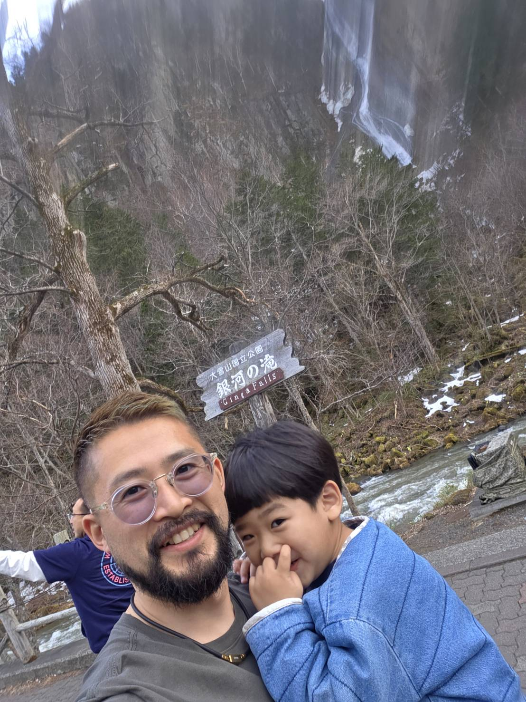
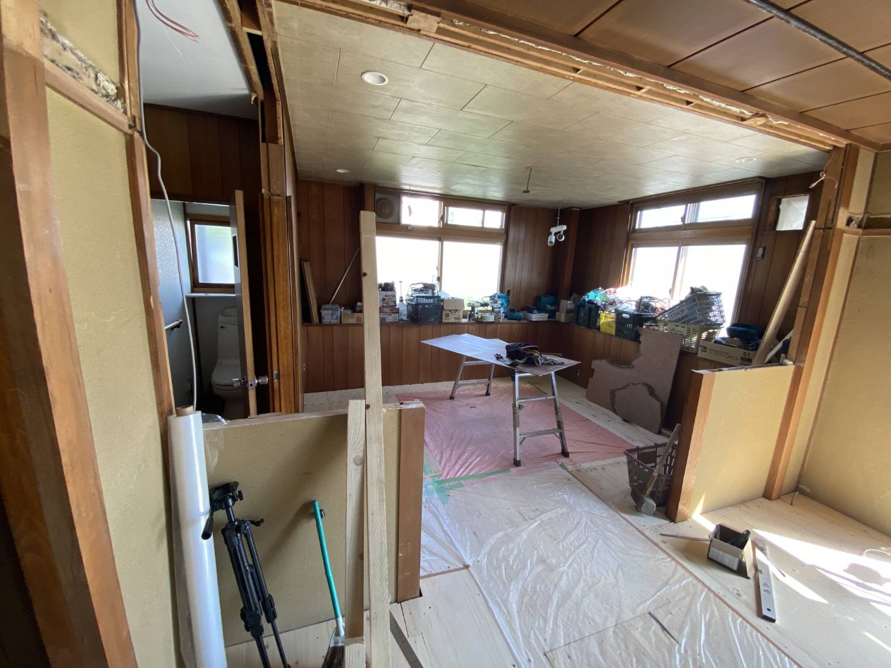

こんにちは、リョウです！
Brush Up Storesのオーナーです。
オーストラリアと日本で長年経験を積んできた、カット専門の理容師です。
ウェブサイトをご覧いただきありがとうございます。ぜひ一度、お店にも遊びに来てください！

Brush Up Storesのオーナーです。
オーストラリアと日本で長年経験を積んできた、カット専門の理容師です。
ウェブサイトをご覧いただきありがとうございます。ぜひ一度、お店にも遊びに来てください！

ここがBrush Up Storesのスタート地点です。 この物件を購入した当初は、内装も外装も大がかりな改装が必要な状態でした。 そこから少しずつ、自分の手で改装を始めました！

壁や床など、たくさんの部分を取り外すところから始めました。


今では、ゆったりとカットを受けていただける空間になりました！

1階の奥には、まだ手を入れる必要のある広いスペースがありました。 お子さま連れのお客様にも快適に過ごしていただけるお店にしたいと考えました。


こちらが待合スペースです！
待ち時間には、お子さまが遊べるスペースもあります！

廊下も、床や雰囲気をきれいに整える必要がありました。

今では、シンプルで落ち着いた雰囲気の廊下になりました。

こちらが入口です。 お店に入ったときに、店内全体を見渡せるような空間を目指しました。 お会計はセルフレジで簡単にできます。

完成までには時間がかかりましたが、 今ではこの場所を自分の最初の理容室として、とても誇りに思っています！